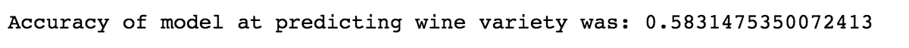

Using the multinomial Naive-Bayes algorithm and natural language processing tools, we created a model to determine wine varietals based on wine descriptions/reviews.
spark = SparkSession.builder.appName('test').getOrCreate()
from pyspark.sql.functions import length data = start_data.withColumn('length', length(start_data['description']))
wine_variety_to_num = StringIndexer(inputCol= 'variety',outputCol='label') tokenizer = Tokenizer(inputCol="description", outputCol="token_text") stopremove = StopWordsRemover(inputCol='token_text',outputCol='stop_tokens')
hashingTF = HashingTF(inputCol="stop_tokens", outputCol='hash_token', numFeatures=10000) idf = IDF(inputCol='hash_token', outputCol='idf_token')
from pyspark.ml.classificationpyspark. import NaiveBayes, NaiveBayesModel nb = NaiveBayes(smoothing=1.0, modelType='multinomial') wine_predictor = nb.fit(training)
from pyspark.ml.evaluation import MulticlassClassificationEvaluator acc_eval = MulticlassClassificationEvaluator() acc = acc_eval.evaluate(test_results)
